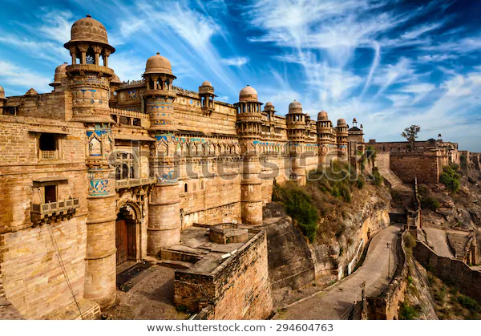
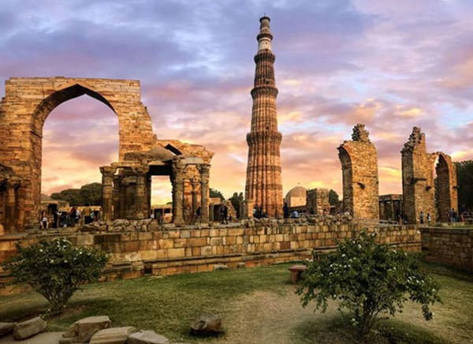
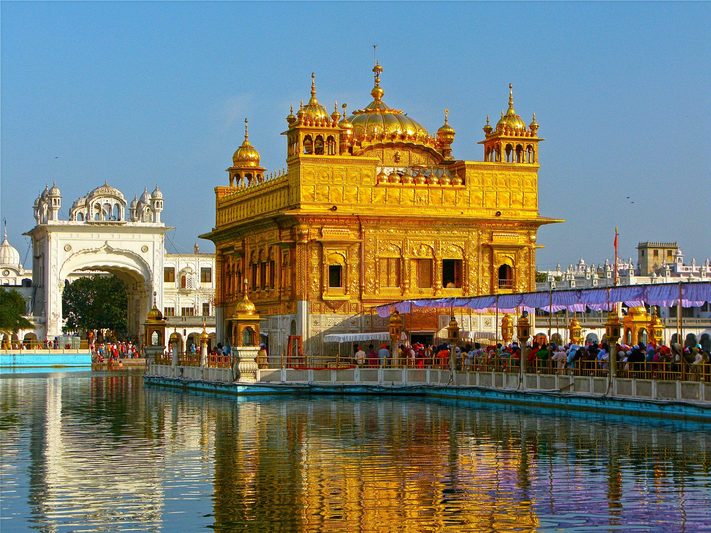
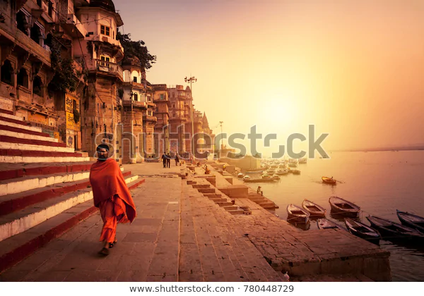

1.AMBER FORT
{kind=link}
The Amer Fort, situated in Amber, 11 kilometers from Jaipur, is one of the most famous forts of Rajasthan. Amer, originally, was the capital of the state before Jaipur. It is an old fort, built in 1592 by Raja Man Singh. This fort is also very popularly known as the Amer Palace.Mughal architecture greatly influenced the architectural style of several buildings of the fort.[8][9][10] Constructed of red sandstone and marble, the attractive, opulent palace is laid out on four levels, each with a courtyard. It consists of the Diwan-e-Aam, or "Hall of Public Audience", the Diwan-e-Khas, or "Hall of Private Audience", the Sheesh Mahal (mirror palace), or Jai Mandir, and the Sukh Niwas where a cool climate is artificially created by winds that blow over a water cascade within the palace. Hence, the Amer Fort is also popularly known as the Amer Palace.[5] The palace was the residence of the Rajput Maharajas and their families. At the entrance to the palace near the fort's Ganesh Gate, there is a temple dedicated to Shila Devi, a goddess of the Chaitanya cult, which was given to Raja Man Singh when he defeated the Raja of Jessore, Bengal in 1604. (Jessore is now in Bangladesh).[4][11][12] Raja Man Singh had 12 queens so he made 12 rooms, one for each Queen. Each room had a staircase connected to the King’s room but the Queens were not to go upstairs. Raja Jai Singh had only one queen so he built one room equal to three old queen’s rooms.
2. QUTUB MINAR
{kind=link}
The Qutub Minar is a towering 73 meter high tower built by Qutub-ud-Din Aibak in 1193. The tower was built to celebrate Muslim dominance in Delhi after the defeat of Delhi’s last Hindu ruler. This tower is the highest tower in India, complete with five storeys and projecting balconies. The first three storeys of the Qutub Minar are made of red sandstone and the last two are made of marble and sandstone. The construction of the Qutub Minar was started by Qitub-ud-Din Aibak, but he only constructed the basement. The construction of the tower was later taken over by his successor Iltutmish who constructed three more stories. The last two storeys were completed Firoz Shah Tuglak. The different architectural styles from the time of Aibak to Tuglak are clearly visible in the Qutub Minar. Apart from the tower, the Qutub Minar complex comprises of the Quwwat-us-Islam Mosque (the first mosque to be built in India), a 7 metre high iron pillar, the tomb of Iltutmish, Ala’i-Darwaza and the Ala’I Minar.
3. TAJ MAHAL

The Taj Mahal (/ˌtɑːdʒ məˈhɑːl, ˌtɑːʒ-/;[4] lit. 'Crown of the Palace', [taːdʒ ˈmɛːɦ(ə)l])[5] is an ivory-white marble mausoleum on the southern bank of the river Yamuna in the Indian city of Agra. It was commissioned in 1632 by the Mughal emperor Shah Jahan (reigned from 1628 to 1658) to house the tomb of his favourite wife, Mumtaz Mahal; it also houses the tomb of Shah Jahan himself. The tomb is the centrepiece of a 17-hectare (42-acre) complex, which includes a mosque and a guest house, and is set in formal gardens bounded on three sides by a crenellated wall. Construction of the mausoleum was essentially completed in 1643, but work continued on other phases of the project for another 10 years. The Taj Mahal complex is believed to have been completed in its entirety in 1653 at a cost estimated at the time to be around 32 million rupees, which in 2020 would be approximately 70 billion rupees (about U.S. $916 million). The construction project employed some 20,000 artisans under the guidance of a board of architects led by the court architect to the emperor, Ustad Ahmad Lahauri.
4. GOLDEN TEMPLE
{kind=link}
The Gurdwara is built around a man-made pool (sarovar) that was completed by the fourth Sikh Guru, Guru Ram Das in 1577.[5][6] Guru Arjan, the fifth Guru of Sikhism, requested Sai Mir Mian Mohammed, a Muslim Pir of Lahore, to lay its foundation stone in 1589.[7] In 1604, Guru Arjan placed a copy of the Adi Granth in Harmandir Sahib, calling the site Ath Sath Tirath (lit. "shrine of 68 pilgrimages").[2][8] The Gurdwara was repeatedly rebuilt by the Sikhs after it became a target of persecution and was destroyed several times by the Mughal and invading Afghan armies. [2][4][9] Maharaja Ranjit Singh after founding the Sikh Empire, rebuilt it in marble and copper in 1809, overlaid the sanctum with gold foil in 1830. This has led to the name the Golden Temple.[10][11][12]
5. VARANASI HISTORICAL CITY
{kind=link}
Varanasi is one of the oldest continuously inhabited cities in the world. Its early history is that of the first Aryan settlement in the middle Ganges valley. By the 2nd millennium BCE, Varanasi was a seat of Aryan religion and philosophy and was also a commercial and industrial centre famous for its muslin and silk fabrics, perfumes, ivory works, and sculpture. Varanasi was the capital of the kingdom of Kashi during the time of the Buddha (6th century BCE), who gave his first sermon nearby at Sarnath. The city remained a centre of religious, educational, and artistic activities as attested by the celebrated Chinese Buddhist pilgrim Xuanzang, who visited it in about 635 CE and said that the city extended for about 3 miles (5 km) along the western bank of the Ganges.